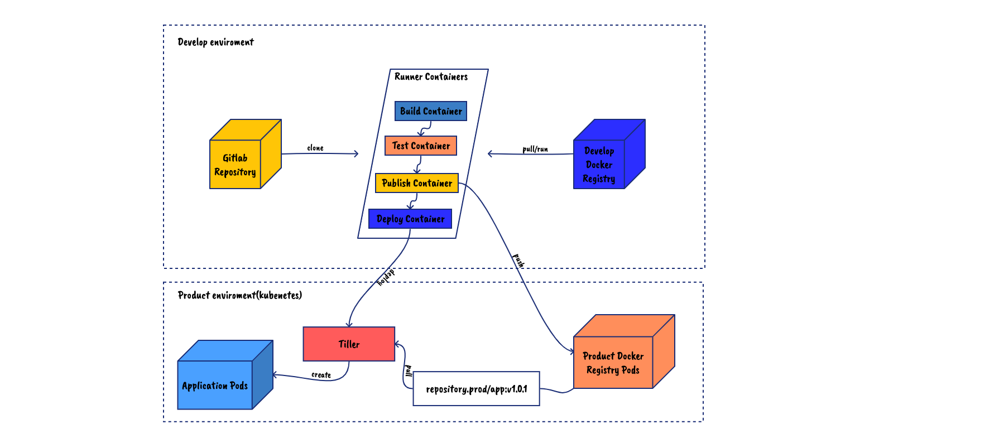
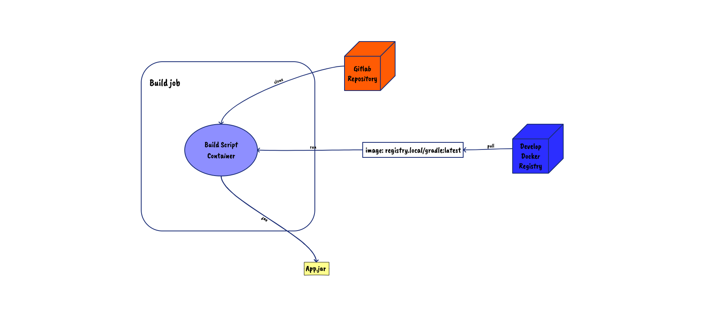
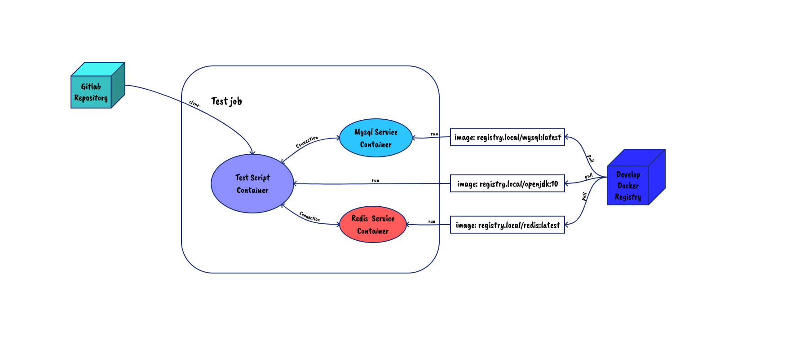
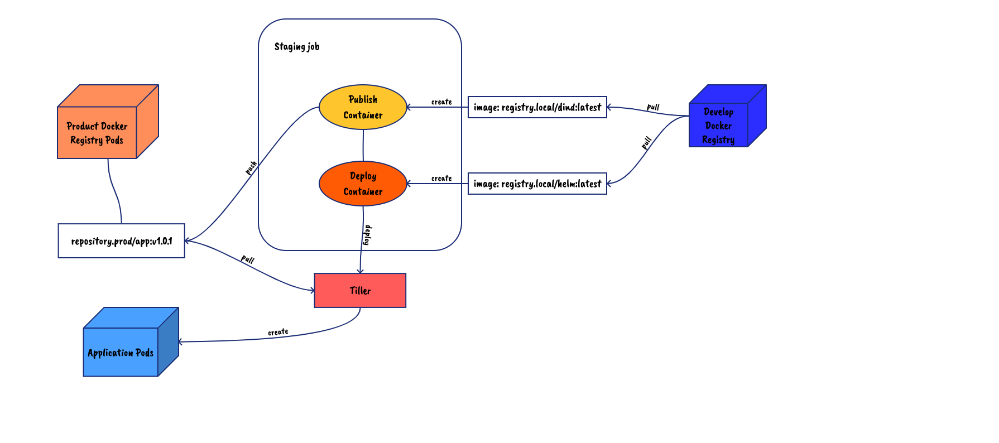

gitlab CI/CD与线上k8s环境集成
概述
依赖k8s做集成测试和持续的版本交付，并与gitlab runner集成，实现提交merge request即提测，上master后自动release。本文将从以下几步简述实现过程：
- 私有docker registry搭建并与docker runner集成
- kubernetes与pipeline
- helm发布和istio做滚动发布的流控
搭建docker-registry并与docker runner 集成
首先，docker-registry作为我们容器镜像的仓库，对于生产环境来说自然是架设在同一子网来说比较合适，不然在发布版本后的新容器创建时会出奇的慢并且会占用网络，而对于我们日常的集成测试，则需要在我们的开发平台同一子网下架设。拓扑如下：

配置kubernetes的runner环境变量
配置k8s的runner环境变量有两种方式：
- 页面添加配置
在项目operations->kubenetes下添加配置 - 在环境变量中添加kubeconfig文件
在ci中将文件移动到.kube/config（若gitlab版本过低可以将环境配置echo至该文件）
配置好环境变量后，打包一个带有kubectl的镜像推到开发registry后，使用pipeline时既可以通过该基础镜像进行k8s的操作了。
安装helm/tiller
单纯的使用kubectl肯定不满足我们编排的需求，可以安装helm/tiller并打包helm开发镜像使用helm对应用进行发布。
下载安装helm在本地
配置好.kube/config
rbac配置（未开启可跳过该步骤）
1
2
3
4
5
6
7
8
9
10
11
12
13
14
15
16
17
18
19
20
21# vim tiller-clusterrolebinding.yaml
apiVersion: v1
kind: ServiceAccount
metadata:
name: tiller
namespace: kube-system
---
apiVersion: rbac.authorization.k8s.io/v1
kind: ClusterRoleBinding
metadata:
name: tiller
roleRef:
apiGroup: rbac.authorization.k8s.io
kind: ClusterRole
name: cluster-admin
subjects:
- kind: ServiceAccount
name: tiller
namespace: kube-system
#kubectl apply -f tiller-clusterrolebinding.yaml安装tiller
1
helm init --service-account tiller --upgrade --tiller-image=registry.cn-hangzhou.aliyuncs.com/google_containers/tiller:v2.14.1
打包helm镜像至开发registry备后续helm部署使用
kubernetes与pipeline
在与kubernetes集成前，我们以一个敏捷开发涉及到涉及到打包、测试、staging发布、滚动发布的pipeline来举例说明。
.gitlab-ci.yaml中定义：
1
2
3
4
5
6stages:
- build
- test
- publish
- staging
- rollin
打包
可以通过指定的基础镜像提供的环境将源码程序打包，如通过gradle镜像将springboot项目打包成可运行jar包：

gitlab-ci.yaml中定义：
1
2
3
4
5
6
7
8
9
10
11
12
13
14
15build_jar:
stage: build
image: registry.local/gradle:latest
script:
- echo -e "\nspring.profiles.active=prod" >> src/main/resources/application.properties
- gradle -g ./.cache bootJar
cache:
paths:
- ./.cache
# keep cache across branch
key: gradle
artifacts:
paths: [build/libs/t1-api-cert.jar]
retry:
2
测试
这里主要指集成测试，在拥有docker环境时，我们可以创建相应的服务容器（如mysql、redis等）提供集成测试：

gitlab-ci.yaml中定义：
1
2
3
4
5
6
7
8
9
10
11
12
13
14
15
16
17
18
19unit_test:
stage: test
image: registry.local/gradle:latest
script:
- gradle -g ./.cache test --info
variables:
MYSQL_DATABASE: test
MYSQL_ROOT_PASSWORD: Ok36369ok
services:
- name: registry.local/mysql
alias: mysql
- redis:latest
retry:
2
cache:
paths:
- ./.cache
# keep cache across branch
key: gradle
staging发布
stage环境为了更好的测试真实的网络环境，建议部署在生产下（可以创建一个新的namespace来放这些容器），而真实环境根据不同的应用架构将有不同的拓扑与部署方案，这里仅举例一个简单的单块应用的helm部署：

1
2
3
4
5
6
7
8
9
10
11
12
13
14
15
16
17
18
19
20
21
22
23publish_image:
stage: publish
image: registry.local/dind:latest
script:
- docker build -t="repository.prod/app:v1.0.1" .
- docker push repository.prod/app:v1.0.1
retry:
2
deploy_stage:
stage: staging
image: registry.local/helm:latest
script:
- helm upgrade --tiller-namespace kube-system deploy-$CI_PROJECT_NAME chart/ --install \
--wait \
--set hosts[0]="$PRODUCT_HOST" \
--set appLabel="$CI_PROJECT_NAME" \
--set containerPort=$CONTAINER_PORT \
--set replicaCount=$replicas \
--set image.repository=repository.prod/app:v1.0.1 \
--namespace="$KUBE_NAMESPACE" \
--version="$CI_PIPELINE_ID-$CI_COMMIT_SHA"
retry:
2
其中的各个参数是自定义chart中规定的，可以根据具体项目及团队习惯进行定制修改并添加功能，比如滚动发布就只需要集成对应的istio的yaml配置并暴露出对应的VALUES配置来进行流量控制。
滚动发布
在生产部署中，我们可能会采用各种策略来实现版本发布，如金丝雀、灰度（滚动）发布等，咱们可以在helm charts中定义好实现方式，如使用istio的router-rule实现。
关于.gitlab-ci.yaml
支持模板继承
1
2
3
4
5
6
7
8
9
10
11
12
13
14
15
16
17
18
19
20
21
22
23
24
25.product: &prod_template
only:
- master
retry:
2
.rollin: &rollin_template
<<: *prod_template
stage: rollin
script:
- init_kube_config
- check_kube_domain
- ensure_namespace
- create_secret
- check_chart
- deploy canary $ROLLIN_PERCENTAGE
environment:
name: $CI_PROJECT_NAME
url: http://$CI_PROJECT_NAME.test.com
deploy_canary:
<<: *rollin_template
stage: canary
variables:
ROLLIN_PERCENTAGE: $CANARY_WEITHG支持include
1
2
3
4
5
6stages:
- build
- test
include:
- template: jobs/build.gitlab-ci.yml
- template: jobs/test.gitlab-ci.yml支持函数定义
1
2
3
4
5
6
7
8
9
10
11
12test:
stage: test
image: registry.local/alpine:latest
script:
- hello
.auto_devops: &auto_devops |
export CI_WORD="hello gitlab ci!
function hello() {
echo $CI_WORD
}
before_script:
- *auto_devops